Guide
Zonal gives every display a Layout of Zones and puts each window in one with a single gesture. This guide shows how, and when each way of doing it pays off, so you spend your day working instead of dragging window corners. Everything fits on one printable page in the quick reference.
The idea in one minute
Windows on a Mac open wherever they like. Over a day they pile up, overlap and hide each other, and every time you want two things side by side you drag corners until they roughly fit. That is a small cost paid hundreds of times.
Zonal replaces it with a plan. You decide once how each display should be divided: a Layout made of Zones. From then on, putting a window in its place is one gesture, called a Snap: the window moves and resizes to fill the Zone exactly, with even gaps and nothing overlapping.
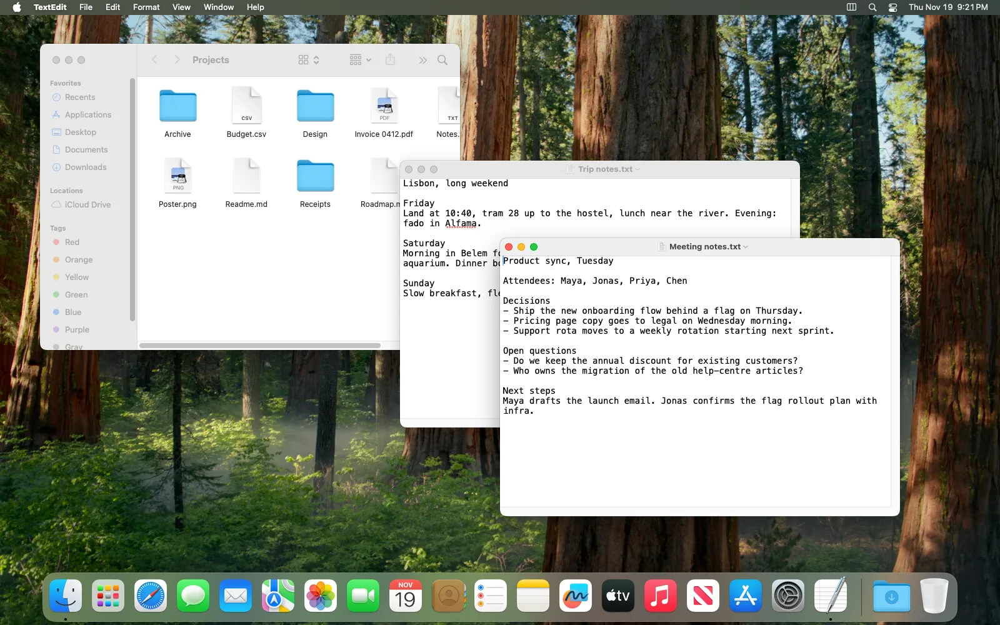
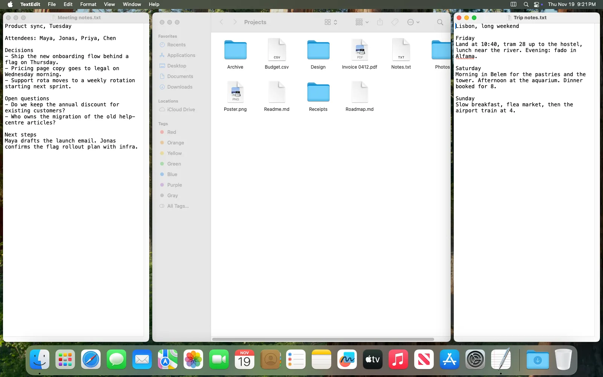
Because the Zones stay the same, your hands learn them. After a few days you stop thinking about where windows go.
Getting started
Install
Open the downloaded zip file, move Zonal to your Applications folder, then open it from there.
First launch
The first time Zonal opens, it shows a welcome window with three steps. Zonal runs from the menu bar and has no Dock icon.
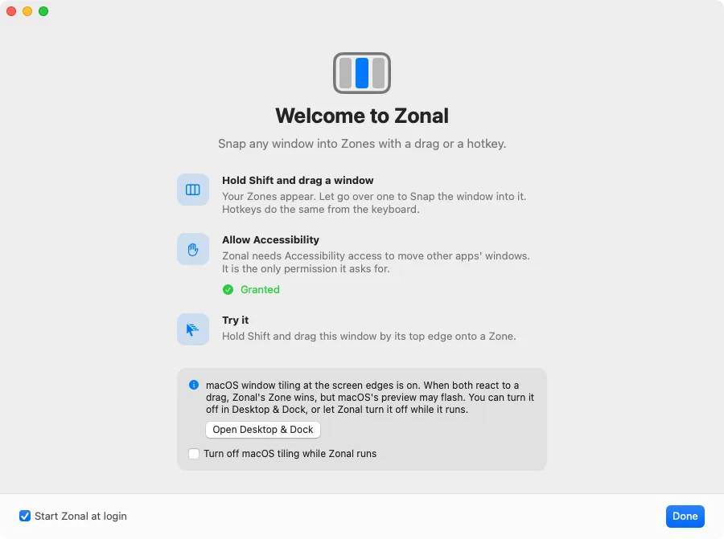
- What Zonal does. A short summary: hold ⇧ while you drag a window to see the Zones, then let go over one.
- Allow Accessibility. Zonal needs Accessibility access to move other apps’ windows. Click Open Settings, which opens Privacy & Security > Accessibility. Turn on Zonal. The status in the welcome window changes from “Not granted yet” to “Granted” by itself. You do not need to relaunch Zonal.
- Try it. Drag the welcome window by its title bar while you hold ⇧ (Shift), and let go over a Zone. The welcome window is the one Zonal window that Snaps.
You can reopen the welcome window at any time: choose Welcome… from the menu-bar menu.
Launch at login
The welcome window has a Start Zonal at login checkbox. It is ticked by default, and it is worth leaving on: Zonal is most useful when it is always there. You can change it later in Settings > General; both places always show the same state. If macOS asks you to approve the login item, Zonal says so and offers Open Login Items.
The menu-bar icon
Zonal lives in the menu bar. The icon shows a row of three Zones. While Accessibility is missing, the icon shows a warning triangle instead. Click it to open the menu.
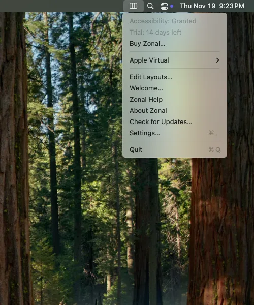
- Accessibility status. If access is missing, Grant Accessibility Access… appears.
- License status: the days left in your Trial, or Licensed. Once the Trial ends, Buy Zonal… appears.
- One submenu per connected display. Choose the display’s Layout there.
- Edit Layouts… opens the Layouts window.
- Welcome… reopens the welcome window.
- Zonal Help opens this guide.
- About Zonal
- Check for Updates…
- Settings… (⌘,)
- Quit (⌘Q). Before it quits, Zonal sends windows in the Rail back to their Zones and puts back the macOS tiling settings it turned off.
Three ways to Snap
Every Snap ends the same way, so pick the gesture that suits what your hands are doing at that moment. Most people use all three.
| Way | How | Best when |
|---|---|---|
| Drag | Hold ⇧ while you drag a window, let go over a Zone. | You are already moving the window with the mouse, or you want to see the Zones while you choose. |
| Green button | Hold ⌘ on the green button, click a Zone in the picker. | You use a trackpad and dragging is tiring, or you want to Snap without moving the window first. |
| Keyboard | ⌃⌥⇧ and a Zone number. | Your hands are on the keyboard, for example right after opening a new window. |
Snapping with the mouse
- Start dragging a window. Drag it by its title bar.
- Hold ⇧ Shift. An overlay appears on the display under your pointer. It shows the display’s Layout, with each Zone numbered. The Zone under the pointer is highlighted.
- Move over the Zone you want. If the pointer is in a gap between Zones, Zonal selects the nearest Zone. If the pointer is outside the usable area of the display, such as over the menu bar or the Dock, no Zone is selected.
- Release the mouse button. The window Snaps to the highlighted Zone.
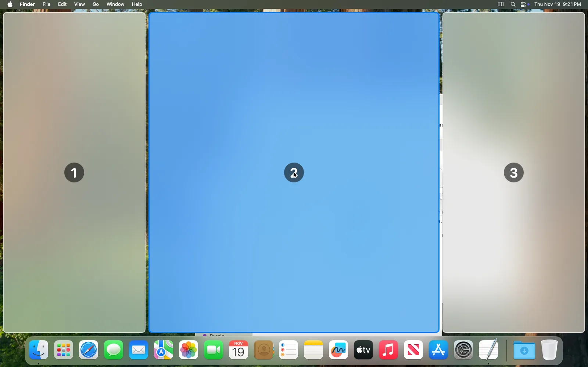
If you move the pointer to another display, the overlay moves with it and shows that display’s Layout.
For your first few drags without the activation key, a small label follows the pointer to remind you which key to hold. It names the key you chose in Settings, and it goes away for good after your first Snap, or after three drags.
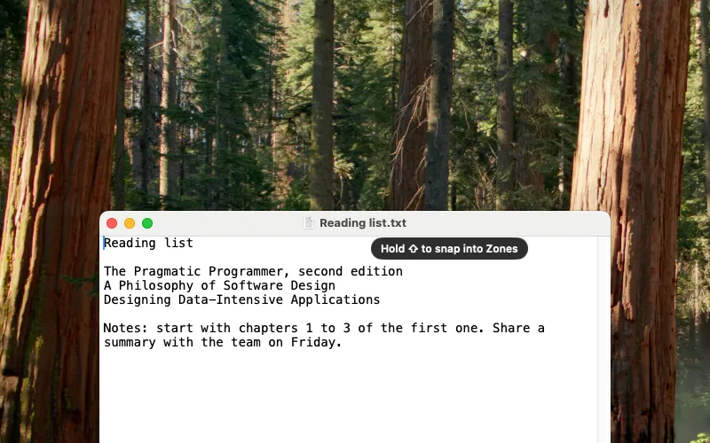
Cancel a Snap
Release ⇧ before you release the mouse button, or press esc. The overlay hides and the window stays where you drop it. Dragging without the activation key never shows the overlay. Resizing a window or selecting text never shows it either.
Span several Zones
Sometimes one window deserves more room for a while: a wide spreadsheet, a timeline, a long diff. Rather than make a new Layout, let the window cover several Zones.
Hold ⇧⌃ (Shift and ⌃ Control) while you drag. Every Zone the pointer crosses is added to the selection. When you release the mouse button, the window fills the smallest rectangle that contains all the selected Zones, including the gaps between them.
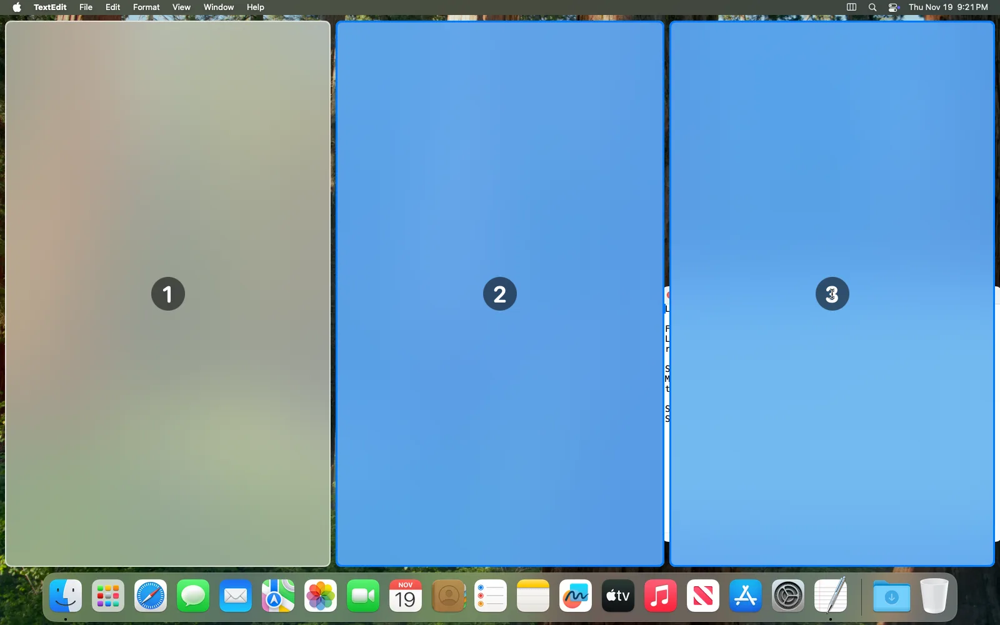
If you release ⌃ before the mouse button, the selection collapses to the Zone under the pointer. Spanning is limited to one display: if the pointer enters another display, the selection starts over.
Change the activation key
The activation key is ⇧ by default. To change it, open Settings > General.
- Activation key offers Shift, ⌥ Option and ⌘ Command. ⌃ is not offered because it is the span key. Pick another key if an app you use already gives ⇧-drag a meaning, such as constrained moves in a design tool.
- Always show Zones (hold the key to suppress) shows the overlay on every window drag. The activation key then hides it for that drag. Turn it on if almost every drag you make ends in a Snap.
- Also show Zones while a mouse side button is held lets the Back or Forward button of your mouse work like the activation key, so you can Snap with one hand. It is Off by default. Browsers may also go back or forward when the button is pressed over them, and mouse utilities that remap the button can hide it from Zonal, so the button is an extra trigger beside the key.
To span, hold ⌃ together with the activation key (⌥⌃ or ⌘⌃). With Always show Zones on, ⌃ alone spans. The span key cannot be changed.
Snapping from the green button
Hold ⌘ (Command) and rest the pointer on a window’s green button. After a moment, the Zone picker opens under the button: a miniature of the display’s Layout, with the same Zone numbers and the Layout’s name as a caption.
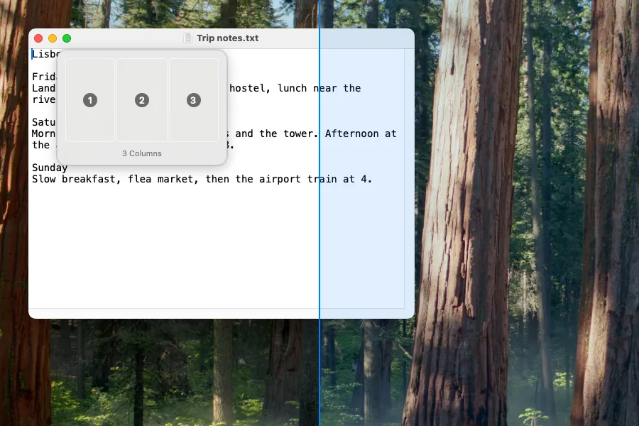
- Snap. Click a Zone. Hovering a Zone first shows where the window will land.
- Span. ⌃-click Zones to add them to a selection, then click once more without ⌃ to Snap the window across all of them. You can also press on one Zone, sweep across others, and release.
- Close. Move the pointer away, or press esc. You can let go of ⌘ once the picker is open.
Without ⌘, the green button shows the macOS tile menu as usual. Windows with a custom title bar and no standard green button get no picker. To turn the picker off, clear Zone picker in Settings > General.
Snapping with the keyboard
Shortcuts act on the focused window of the frontmost app, on the display that holds the center of the window.
| Shortcut | Action |
|---|---|
| ⌃⌥⇧1 to 9 | Snap the window to that numbered Zone. Nothing happens if the Layout has fewer Zones than the number. |
| ⌃⌥⇧[ | Move to the previous Zone. From the first Zone, the window moves to the last. If the window is not in a Zone, it moves to the last Zone. |
| ⌃⌥⇧] | Move to the next Zone. From the last Zone, the window moves to the first. If the window is not in a Zone, it moves to the first Zone. |
| ⌃⌥⇧` | Switch the display to its next Layout. The list wraps around. Windows do not move; the new Layout applies to your next Snap. |
⌃ Control, ⌥ Option, ⇧ Shift. Use the Key labels switch in the header to show names instead of symbols. Keys such as [, ] and ` are shown for your current keyboard layout. If your keyboard is labelled Ctrl, Alt and Win, turn on Show key names instead of symbols in Settings > General, and Zonal writes keys by name too.
Zones are numbered in reading order: top to bottom, then left to right. The numbers are the ones you see in the overlay, so a glance at it while dragging teaches you the shortcuts.
Change or clear a shortcut
Open Settings > Hotkeys. Each action has its own row: Zone 1 to Zone 9, Previous Zone, Next Zone and Next Layout.
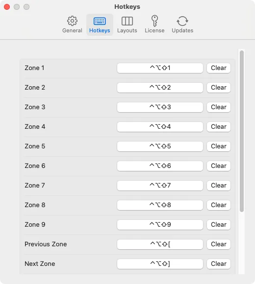
- Click the shortcut.
- Press the new combination. The new shortcut works at once, and the old one stops.
Press esc to cancel, or delete to clear the shortcut. You can also click Clear next to it. A cleared action shows “Not set” and does nothing.
Every shortcut needs ⌃ or ⌘. macOS does not deliver a shortcut that uses only ⇧ or ⌥ as modifiers, so Zonal refuses it with “A shortcut needs ⌃ or ⌘.” Zonal also refuses a combination another Zonal action already uses, and tells you which one.
Two buttons set every shortcut at once. Hyper (⌃⌥⇧⌘) adds ⌘ to all of the default combinations; use it if you have mapped Caps Lock to a Hyper key, or if another app already takes the defaults. Restore defaults returns to the table above.
When another window manager is running
If an app such as Rectangle, Magnet or Moom is running, Settings > Hotkeys and the welcome window show a warning. macOS delivers a shortcut shared by two apps to both of them, so pick combinations the other app does not use. The warning disappears when the other app quits.
Resizing windows side by side
When two Snapped windows sit in neighbouring Zones, drag the edge where they meet and both windows resize together: the neighbour follows as you drag, so there is no gap and no overlap. Every Snapped window along that edge follows, for example two stacked windows beside a tall one. A corner drag moves the windows along both of its edges.
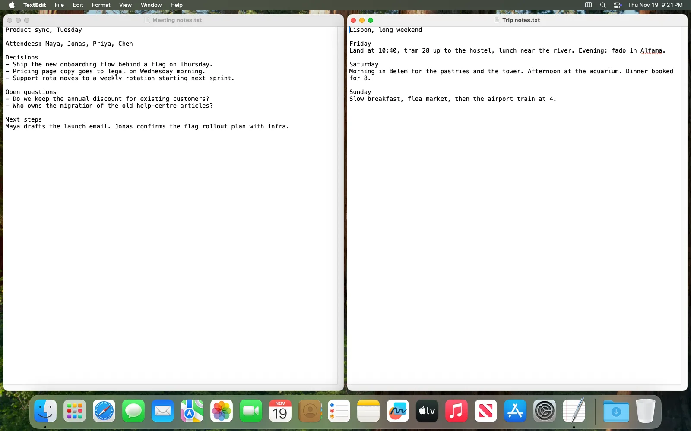
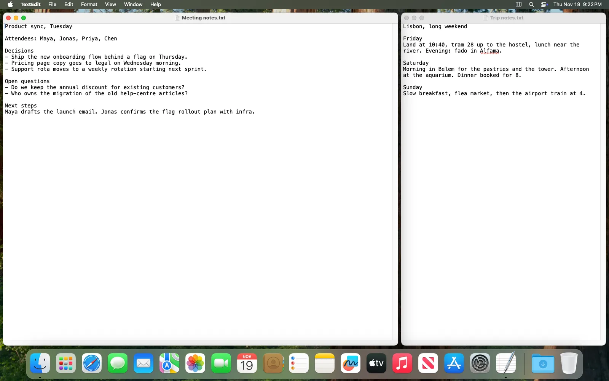
- Only the windows change. The Layout stays as it is, and the next Snap uses the original Zones. Snap a window again to return to the plan.
- A neighbour stops when it reaches its own minimum size. Your drag is never blocked, so the windows may overlap from there.
- Two windows stop resizing together once either one is moved, closed or Snapped elsewhere, or when the display’s Layout changes.
To turn it off, clear Resize neighbouring windows together in Settings > General.
Pick a Layout for how you work
The best Layout follows two things: the shape of the display and what you do on it. Some starting points, all of which you can build in a minute (see Layouts). Zonal comes with the first five.
2 Columns: laptops
On a 13 to 16 inch screen, two windows is the most that stays readable. Work on the left, reference on the right: code and documentation, an email and the calendar, a draft and its sources.
Tip: span both Zones when one window needs the whole screen for a while.
Priority Grid: wide and ultrawide
On a wide display, the far edges are uncomfortable to read for long. Keep your main window in the center, straight ahead, and put chat, music or a terminal at the sides where a glance is enough.
Tip: it is the default for ultrawide displays.
3 Columns: 27 inch and 4K
Three equal windows for work that compares things: a design, its spec and the build; three documents; a browser, an editor and a preview.
Tip: span two columns for the window you are actively editing.
2 Rows: portrait displays
A rotated display is made for long, narrow things: logs, chat threads, a web page, a PDF. Stack two of them.
Tip: it is the default for portrait displays.
2×2 Grid: calls and dashboards
Four windows you watch more than you type in: a video call, its notes, the shared document and the chat; or four dashboards.
Agent workstation: coding with agents
Your editor on the left, one terminal per agent session in the middle, and a narrow Rail on the right. Sessions that are working move to the Rail on their own, and come back when they need you.
Build it: Columns template, then split and mark the Rail in the editor.
Layouts
A Layout is a named arrangement of Zones that covers one display. The Zones never overlap and always cover the whole display.
Zonal starts with five Layouts: Priority Grid (25/50/25 columns), 3 Columns, 2 Columns, 2 Rows and 2×2 Grid.
The Layouts window
Choose Edit Layouts… from the menu-bar menu, or click Open Layouts Window in Settings > Layouts. Your Layouts are listed on the left. Select one to change it on the right.
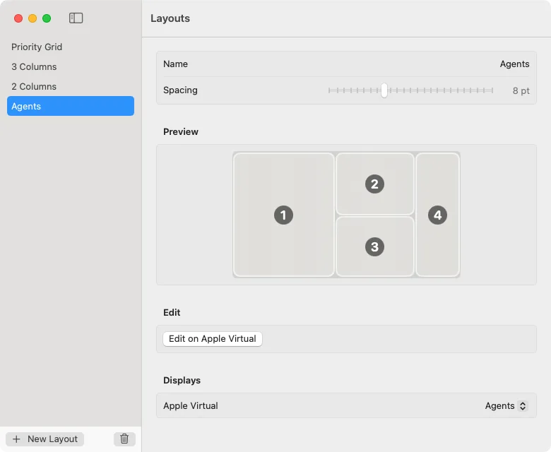
- Create. Click New Layout, choose a Template (Columns, Rows, Grid or Priority Grid), set the number of columns or rows from 1 to 6, and click the Create button, which carries the Layout’s name.
- Rename. Edit the Name field. A name that says what the Layout is for, such as “Meetings”, is easier to pick from the menu than one that says its shape.
- Spacing. The Spacing slider sets the gap between Zones and at the edges of the display, from 0 to 24 points. Small gaps make it easier to see where one window ends; 0 gives the most room on a small screen.
- Delete. Click the trash button below the list. The last remaining Layout cannot be deleted. If a display uses the Layout you delete, that display switches to the first remaining Layout.
- Assign. Under Displays, choose a Layout for each connected display. You can also do this from the menu-bar menu.
Name, spacing and display changes apply at once.
The full-screen editor
To change the Zones themselves, select the Layout in the Layouts window and click Edit on followed by the display’s name, for example Edit on Built-in Retina Display. The editor covers that display, so you work at real size and see exactly how big each Zone will be.
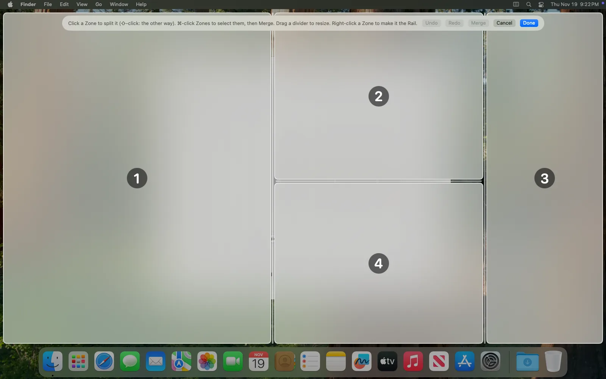
- Split a Zone. Click it. The Zone splits in two at the midpoint of its longer side: a wide Zone becomes two side-by-side Zones, a tall Zone becomes two stacked Zones. ⇧-click splits the other way.
- Resize. Drag a divider. It moves in steps of 5%, and no Zone can become smaller than 5% of the display in either direction. A split that would make a Zone smaller than that is refused.
- Merge. ⌘-click two or more neighboring Zones to select them, then click Merge (⌘J). The Zones must form a rectangle together; otherwise Zonal refuses.
- Numbers. After every edit, the Zones are renumbered in reading order, top to bottom and then left to right. Those numbers are the ones the overlay and the Zone shortcuts use.
- Rail. Right-click a Zone and choose Make Rail to make it the Layout’s Rail. A Layout has at most one; choosing it for another Zone moves it. Remove Rail turns it back into an ordinary Zone. A Layout with a single Zone cannot have a Rail.
- Undo and redo. ⌘Z or the Undo button undoes the last edit. ⇧⌘Z or Redo redoes it. The history ends when you leave the editor.
Click Done to save the Layout. Press esc or click Cancel to discard your edits and leave the Layout as it was. You return to the Layouts window either way.
Agent sessions and the Rail
A session is Busy while the agent works and needs nothing from you. It is Waiting when the agent has stopped and needs you: it finished, asks permission, or asks a question.
After a session has been Busy for 20 seconds, its window moves into the Layout’s Rail: a Zone set aside for windows that need no attention, where the window stays readable at a smaller size. The window next to the Zone it left grows into the space. When the session is Waiting, the window goes back to its Zone and the neighbour shrinks back. Nothing overlaps, and the window that comes back does not take focus, so it never interrupts what you are typing.
Here is the same story on a real screen:
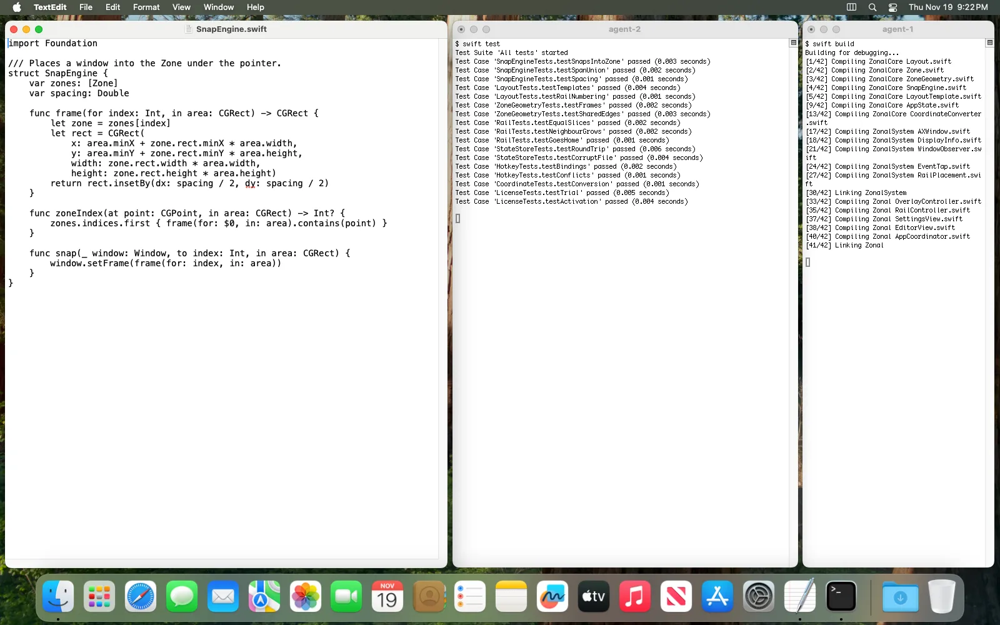
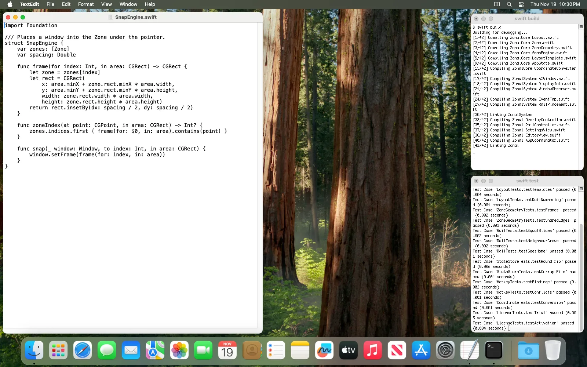
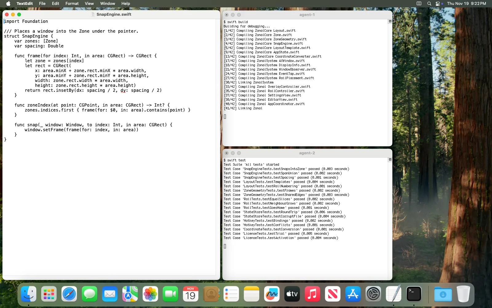
Set it up
- Add a Rail to a Layout. In the full-screen editor, right-click a Zone, often a narrow one at the side, and choose Make Rail. The Rail is drawn in orange with a dashed outline and has no number.
- Connect Claude Code. In Settings > General, click Connect Claude Code. Zonal adds its hooks to
~/.claude/settings.json, which applies to every session, and keeps a copy of the previous file next to it assettings.json.zonal-backup. Sessions that are already running pick up the change by themselves. - Snap each terminal window to a Zone of that Layout. Zonal only moves Snapped windows, and it learns each session’s Zone from where its window is Snapped.
- Allow Automation. The first time a session sends a signal, macOS asks whether Zonal may control your terminal app. Zonal uses it only to ask the terminal which window runs the session. Click Allow.
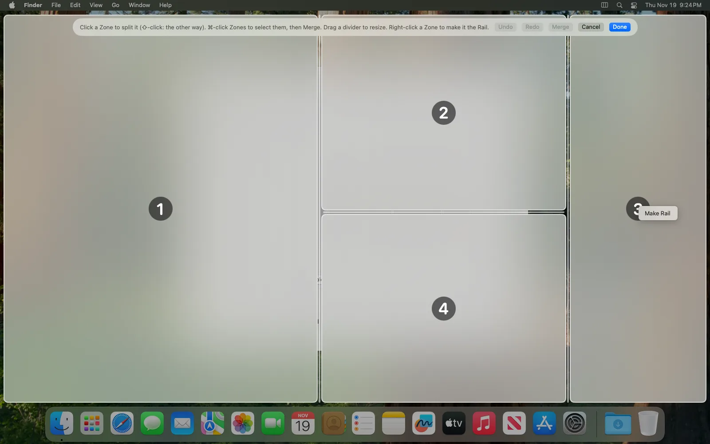
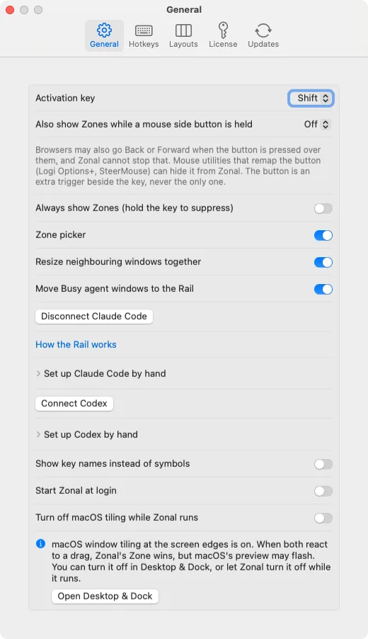
Move Busy agent windows to the Rail in Settings > General is on by default. Turn it off to pause the Rail without disconnecting Claude Code. If you prefer to edit ~/.claude/settings.json yourself, open Hook entries for ~/.claude/settings.json under the button and click Copy. Disconnect Claude Code removes Zonal’s hooks and leaves your other hooks alone.
Supported terminals: Terminal, iTerm2 and Ghostty 1.3 or later. In Ghostty, Zonal finds the window by its folder and title, so two Ghostty windows in the same folder with the same title are left alone. Terminals inside an editor, such as VS Code or Cursor, cannot be moved, since one window holds many terminals.
In the overlay, the Rail is drawn the same way and is never a drop target, the Zone shortcuts skip it, and the Zone picker does not offer it: only Busy sessions go there.
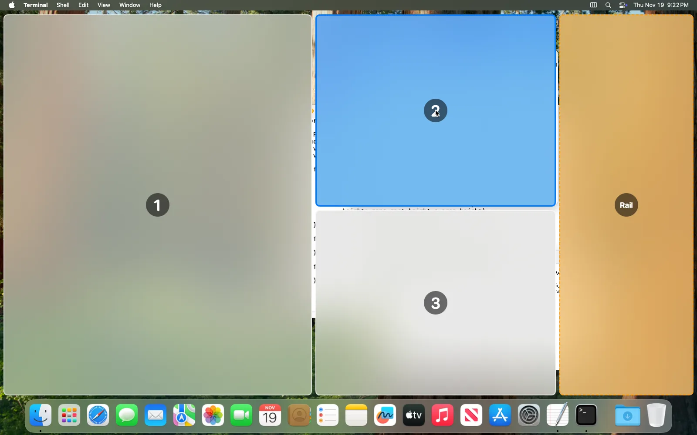
While you work
- Several Busy sessions share the Rail in equal slices, the oldest on top. A slice is never shorter than 160 points; a window that does not fit stays in its Zone until a slice frees up.
- The neighbour that grows is a Snapped window whose Zones and the emptied Zone together form a rectangle. If several qualify, the one you used most recently grows. If none does, the Zone stays empty. If the window that grew is an agent session that stays Busy too, it moves to the Rail like the other, and its own Zone becomes the emptied one.
- Click a window in the Rail to bring it back to its Zone at once. Use this when you want to read a session closely, or when a session stops without telling Zonal, for example when you interrupt Claude Code with esc.
- Drag or resize a window in the Rail to take it back yourself. Zonal leaves it where you put it, and the neighbour returns to its own Zone. Snap the window again to hand it back to Zonal.
- Zonal waits for you. A window you are dragging, or that the pointer is over, moves once you let go or move away.
- If the Zone is taken. When a session is Waiting but another Snapped window now fills its Zone, the window stays in the Rail until the Zone is free. Click it to bring it back anyway.
- Resumed sessions. When you resume a session in a new terminal window, for example with
claude --resume, Zonal Snaps the window to the session’s Zone, if that Zone is free on the same display and Layout. A brand-new session is never moved until you Snap it once. Zonal forgets a session after 30 days without a signal.
Every window in the Rail goes back to its Zone when you turn the toggle off, disconnect Claude Code, switch or edit the display’s Layout, connect or disconnect a display, or choose Quit from the menu-bar menu. If Zonal restarts for an update or after a crash, the windows stay in the Rail, and the next signal or a click brings them back.
When a window does not move
Zonal leaves a session’s window alone unless all of these hold:
- Claude Code is connected, and Move Busy agent windows to the Rail is on.
- The window is Snapped, and its display’s current Layout has a Rail.
- The terminal is supported, and Zonal may control it in System Settings > Privacy & Security > Automation. When it may not, Settings > General says so under the toggle.
- The session has been Busy for 20 seconds without a pause.
Other agents and scripts
Any agent or script can drive the Rail with Zonal’s URL scheme, for example a long build, a test run or another agent tool. Open the URL with open -g so Zonal stays in the background:
zonal://busy: the session is Busy.zonal://waiting: the session needs you.zonal://resume: a session resumed in a new window.
Each URL needs session, a stable id for the session, and term, the terminal’s TERM_PROGRAM: Apple_Terminal, iTerm.app or ghostty. It finds the window with tty (Terminal and iTerm2, for example ttys003), termsession (iTerm2’s ITERM_SESSION_ID) or cwd (the working folder, Ghostty). Values are URL-encoded, and Zonal ignores items it does not know. For example, to send a long build to the Rail and bring it back when it ends:
s=build-$$; t=$(tty | sed 's|/dev/||')
open -g "zonal://busy?session=$s&term=$TERM_PROGRAM&tty=$t"
make release
open -g "zonal://waiting?session=$s&term=$TERM_PROGRAM&tty=$t"Get the most out of Zonal
- Give each display a job. A Layout that matches what you do there beats a clever one. The laptop screen for communication, the big display for the main work, the portrait one for logs and reading.
- Keep your main work in the same Zone. If your main window is always Zone 2, ⌃⌥⇧2 becomes a reflex for “back to work”.
- Use two Layouts per display for two modes, and switch with ⌃⌥⇧`. The next Snap uses the new Layout, so nothing jumps around when you switch.
- Span instead of making more Layouts. One window needs more room for ten minutes? Span it over two Zones, then Snap it back.
- Rebalance with the shared edge instead of editing the Layout when the change is temporary.
- Turn on Always show Zones if nearly every drag ends in a Snap: you then hold a key only for the rare drag that should not Snap.
- On a trackpad, use the green button. ⌘ and a click is less effort than a held key and a long drag.
- On a mouse with side buttons, Snap one-handed with Also show Zones while a mouse side button is held.
- Turn off macOS tiling while Zonal runs if you see macOS’s own tile preview flash during your drags.
- Keep the quick reference by your keyboard for the first week. After that, you won’t need it.
- Running agents? Add a Rail. Even with two sessions, the one that needs you is always the big one.
Displays and Spaces
- One Layout per display. Each display has its own Layout, which you assign in the menu-bar menu or the Layouts window.
- New displays. The first time Zonal sees a display, it assigns a Layout by the display’s shape: Priority Grid for ultrawide displays (21:9 or wider), 2 Rows for portrait displays, and 2 Columns for everything else. You can change it at any time, and Zonal never resets it.
- Reconnecting. Unplug a display and plug it back in, and it gets its Layout back. A laptop that moves between a desk and a meeting room finds the right Layout on each display by itself.
- Resolution changes. Zones scale with the display when its resolution or orientation changes. Zonal does not move windows you have already Snapped; macOS repositions them.
- Spaces. A display uses the same Layout on every Space.
Stage Manager and macOS tiling
Stage Manager
When Stage Manager is on and its strip of recent apps is visible, Zonal leaves room for the strip: the Zones, the overlay and every Snap stay clear of it. When the strip hides itself, the Zones use the whole display. You do not need to relaunch Zonal after you turn Stage Manager on or off.
macOS window tiling
macOS can also tile a window when you drag it to a screen edge. If that setting is on, the welcome window shows a one-time tip, and Settings > General shows a note with an Open Desktop & Dock button.
You can also turn on Turn off macOS tiling while Zonal runs, in Settings > General or in the welcome window’s tip. It is off by default. While it is on, macOS does not tile windows dragged to an edge or with ⌥ held. Zonal puts your macOS settings back as they were when you turn it off or quit Zonal, and at the next launch if Zonal stopped unexpectedly. A setting you changed yourself in System Settings meanwhile is left as you set it.
When both react to a drag, Zonal wins: while the overlay is visible, Zonal Snaps the window when you release, over any macOS tile. The macOS preview may flash briefly. The default Zonal shortcuts avoid the fn⌃ shortcuts macOS uses for tiling.
Windows that cannot fill a Zone
Some windows have a fixed size or a minimum size, so they cannot match a Zone exactly. After every Snap, Zonal checks the size the window actually took. If it differs from the Zone, Zonal centers the window on the Zone, and then moves it the least amount needed to keep it fully on the display.
A window larger than the display is aligned to the top-left, so its title bar stays reachable. A window that fits the Zone is not moved a second time.
Windows that Zonal does not Snap
Zonal Snaps standard windows. It never Snaps dialogs, sheets, floating panels and palettes, windows in macOS full-screen mode, or its own windows other than the welcome window. For these windows, dragging shows no overlay and shortcuts do nothing.
Permissions
Zonal needs one permission: Accessibility, so that it can move other apps’ windows. If you use the Rail, it also asks for Automation for each terminal app, so it can find the window that runs a session. It does not need Input Monitoring or Screen Recording, and it does not show the system prompt when it launches. The first time you click Open Settings in the welcome window, macOS shows its prompt once and Zonal appears in the Accessibility list.
Updates
Zonal checks for updates automatically once a day and asks before it installs one. To check now, choose Check for Updates… from the menu-bar menu, or click Check now in Settings > Updates.
- Automatically download and install updates is off by default. Turn it on to install updates without a prompt.
- Include beta versions adds the beta channel to your checks. It is separate from the automatic-install setting.
License and troubleshooting
Zonal includes a 14-day Trial with every feature. When you buy a License, paste the key from your receipt in Settings > License and click Activate. Before you move Zonal to another Mac, click Deactivate this Mac there to free one of your three Activations. For the details, see Licensing. If something does not work as described here, start with the FAQ.